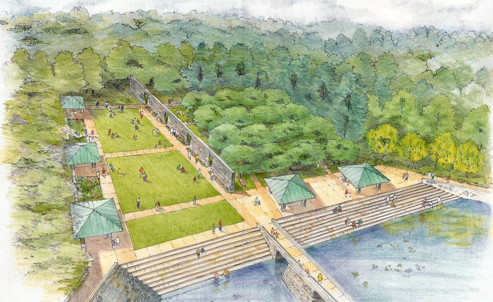
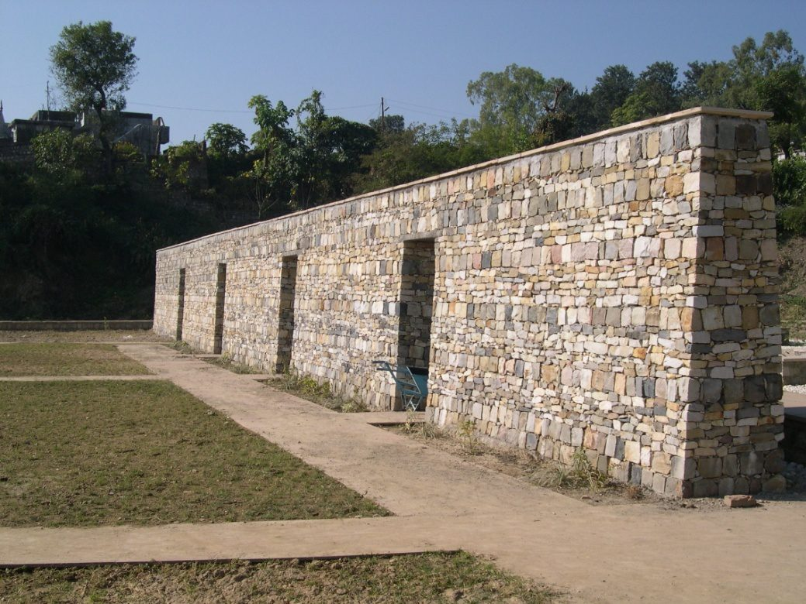
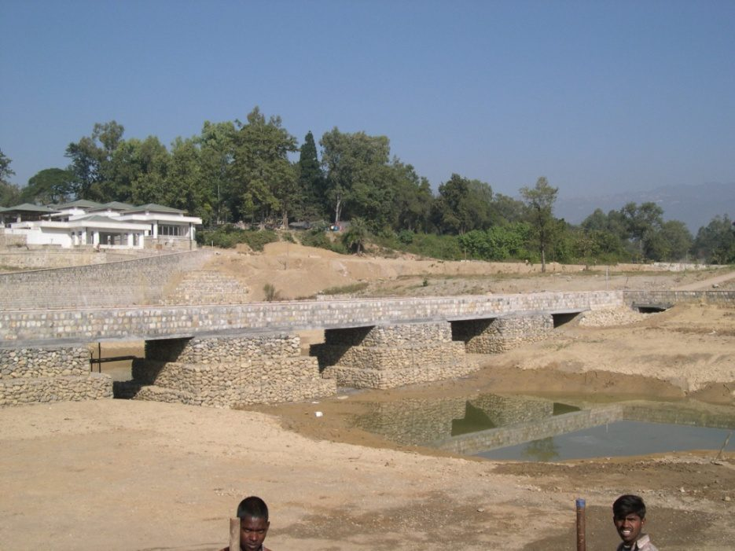
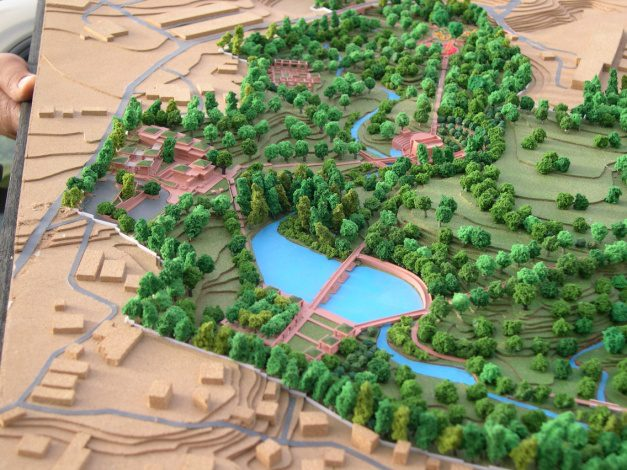

Babbar & Babbar Architects was commissioned by MNAG Architects to assist with the landscape design for the Garden of the Great Arc in Dehradun — an 80-acre park set in an ecologically sensitive ravine in the Survey of India's Hathibarkala Estate.
bbArch worked closely with the clients, the architects, the Forest Research Institute (managing ecological degradation) and the main contractors, MECON Ltd. The project was completed and inaugurated in 2006.
- Client
- Survey of India · Hathibarkala Estate
- Commissioned by
- MNAG Architects
- Location
- Dehradun
- Site area
- 80 acres
- Partners
- Forest Research Institute; MECON Ltd.
- Completed
- 2006
- Scope
- Landscape Design

Terraced water gardens · Dehradun
Gallery
In detail


